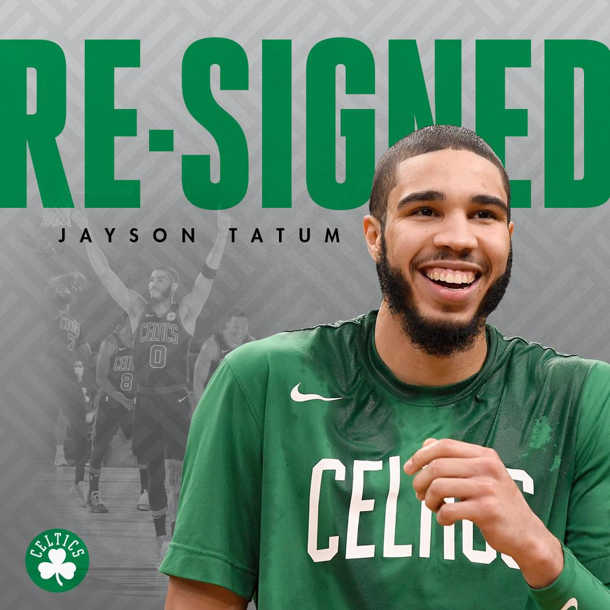
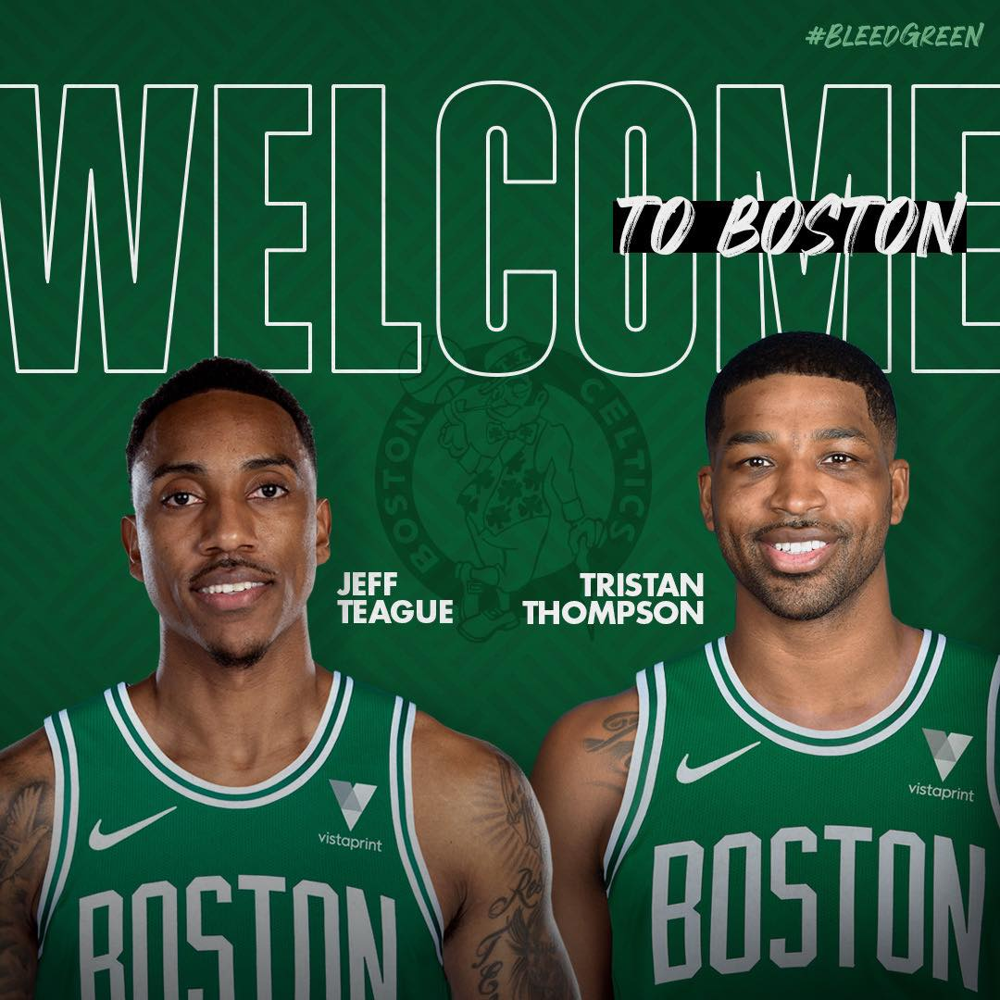
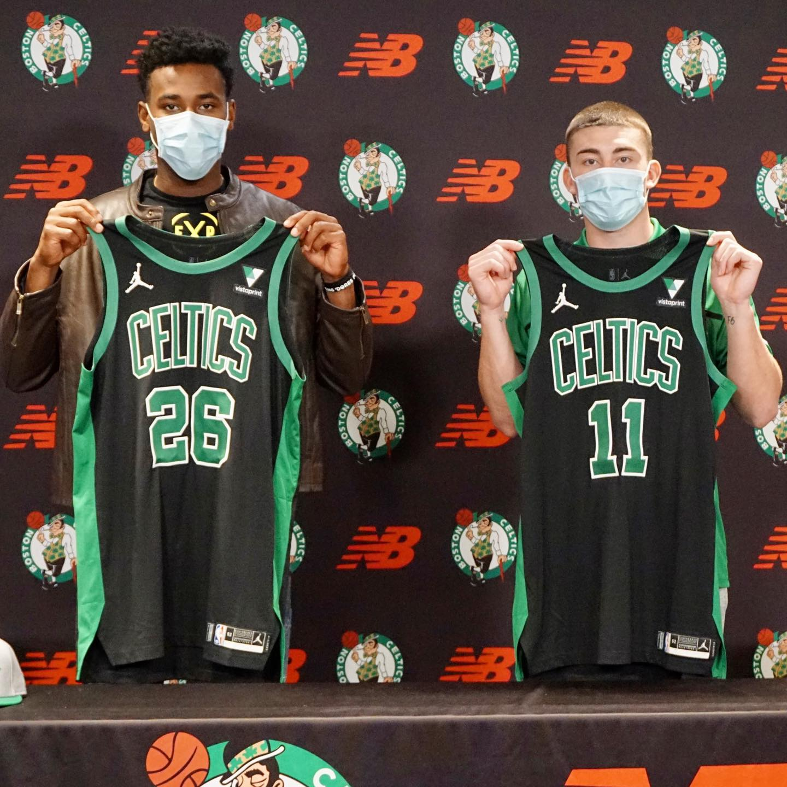

Introduction
The Boston Celtics are an American professional basketball team based in Boston, Massachusetts, playing
in the Atlantic Division of the Eastern Conference in the National Basketball Association (NBA).
Founded in 1946 as one of the league's original eight teams, the Celtics play their home games at TD
Garden, which they share with the National Hockey League (NHL)'s Boston Bruins.
The Celtics are regarded as one of the most successful basketball teams in NBA history; the franchise,
along with the Los Angeles Lakers, has won the most championships in the NBA with 17 (accounting for 23.9%
of all NBA championships since the league's founding) and currently holds the record for the most recorded
wins of any NBA team. The Celtics are one of the two charter BAA franchises (the other being the New York
Knicks) still playing in their original city today.
Latest News In Celtics Basketball

Jayson Tatum Signs Extension
The Boston Celtics have signed All-Star forward Jayson Tatum to a contract extension, the team announced
today. “Jayson has emerged as one of the best two-way players in the NBA through his first three seasons,
and will continue to get better and better as a player and a leader,” said Celtics President of Basketball
Operations Danny Ainge.

Celtics Sign Teague, Thompson
The Boston Celtics have signed guard Jeff Teague and forward Tristan Thompson, the team announced today.
Teague, the 2014-15 All-Star is one of the only players to average at least 10 points and 5 assists in each
of the last eight seasons. Thompson was one of six forwards to average a double-double on at least 50%
shooting in 2019-20, and the only one to also contribute at least 4 offensive boards.

Celtics Draft Nesmith, Pritchard
The Boston Celtics have signed both of their 2020 first round draft selections – forward Aaron Nesmith,
and guard Payton Pritchard – to contracts, the team announced today. Nesmith knocked down at least seven
three-point field goals in four of his 14 contests this past season, while Pritchard averaged 20.5 points
across 31 games as a senior in 2019-20.